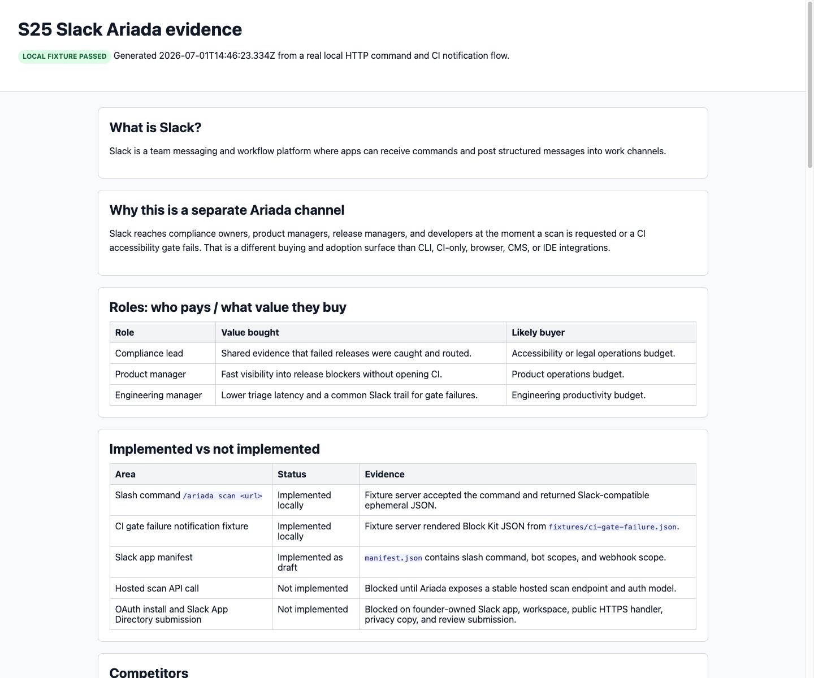

What is Slack?
Slack is a team messaging and workflow platform where apps can receive commands and post structured messages into work channels.
Why this is a separate Ariada channel
Slack reaches compliance owners, product managers, release managers, and developers at the moment a scan is requested or a CI accessibility gate fails. That is a different buying and adoption surface than CLI, CI-only, browser, CMS, or IDE integrations.
Roles: who pays / what value they buy
| Role | Value bought | Likely buyer |
|---|---|---|
| Compliance lead | Shared evidence that failed releases were caught and routed. | Accessibility or legal operations budget. |
| Product manager | Fast visibility into release blockers without opening CI. | Product operations budget. |
| Engineering manager | Lower triage latency and a common Slack trail for gate failures. | Engineering productivity budget. |
Implemented vs not implemented
| Area | Status | Evidence |
|---|---|---|
Slash command /ariada scan <url> | Implemented locally | Fixture server accepted the command and returned Slack-compatible ephemeral JSON. |
| CI gate failure notification fixture | Implemented locally | Fixture server rendered Block Kit JSON from fixtures/ci-gate-failure.json. |
| Slack app manifest | Implemented as draft | manifest.json contains slash command, bot scopes, and webhook scope. |
| Hosted scan API call | Not implemented | Blocked until Ariada exposes a stable hosted scan endpoint and auth model. |
| OAuth install and Slack App Directory submission | Not implemented | Blocked on founder-owned Slack app, workspace, public HTTPS handler, privacy copy, and review submission. |
Competitors
Relevant comparison set: Deque axe platform and axe Assistant for Slack/Teams, Evinced developer testing, A11y Pulse Slack/Teams alerting, Siteimprove-style monitoring suites, and open-source Pa11y CI plus custom webhook notifications.
Domains
Primary production domain should be an Ariada-controlled HTTPS route such as https://ariada.org/slack/command or https://api.ariada.org/slack/command. The local fixture used http://127.0.0.1:65162.
Technical connectors
- Slack slash command request:
POST /slack/command. - CI gate failure fixture:
POST /ci/gate-failure. - Bolt adapter:
createAriadaSlackApp()registers/ariada. - Hosted scanner seam: production should call Ariada hosted scan API or enqueue CLI-backed scan jobs.
Evidence
{
"commandResponse": {
"response_type": "ephemeral",
"text": "Ariada scan requested for https://example.test/checkout.",
"blocks": [
{
"type": "section",
"text": {
"type": "mrkdwn",
"text": "*Ariada scan requested*\nTarget: <https://example.test/checkout>\nLocal fixture accepted the command. Production requires the hosted scan API."
}
}
]
},
"gateResponse": {
"response_type": "in_channel",
"text": "Ariada CI gate failed for ariada-org/example-store",
"blocks": [
{
"type": "section",
"text": {
"type": "mrkdwn",
"text": "*Ariada CI gate failed*\nRepository: `ariada-org/example-store`\nBranch: `main`\nCommit: `f61ba8b`"
}
},
{
"type": "section",
"fields": [
{
"type": "mrkdwn",
"text": "*URL*\n<https://example.test/checkout>"
},
{
"type": "mrkdwn",
"text": "*Violations*\n3"
},
{
"type": "mrkdwn",
"text": "*Passes*\n18"
},
{
"type": "mrkdwn",
"text": "*Report*\n<https://ariada.org/reports/slack-fixture|Open report>"
}
]
},
{
"type": "section",
"text": {
"type": "mrkdwn",
"text": "• *image-alt* (serious): Images must have alternate text.\n• *label* (moderate): Form controls must have labels.\n• *color-contrast* (serious): Text must have sufficient color contrast."
}
},
{
"type": "actions",
"elements": [
{
"type": "button",
"text": {
"type": "plain_text",
"text": "Open CI job"
},
"url": "https://ci.example.test/ariada/slack-fixture/42"
}
]
}
]
}
}
Screenshot
Nonblank screenshot captured from this report after generation: slack-ariada-screenshot.png.
{kind=link}

Blockers
- Slack dev workspace and installed app credentials are required for live slash command testing.
- OAuth install, signing secret, bot token, and incoming webhook URL must be provisioned by the founder.
- A public HTTPS handler is required; Slack cannot call this local fixture directly without a tunnel or deployment.
- The Ariada hosted scan API contract is still the product blocker for real scans from Slack.
Distribution
Local package first, then private workspace install, then Slack App Directory once hosted API, OAuth, privacy policy, support URL, and production observability are ready.
Monetization
Slack is best monetized as a team add-on to hosted Ariada plans: paid seats or workspace tier for ChatOps alerts, retained scan evidence, and compliance audit trails.
Sources
- Slack Developer Docs: Implementing slash commands (accessed 2026-07-01, primary, high reliability).
- Slack Developer Docs: Incoming webhooks (accessed 2026-07-01, primary, high reliability).
- Slack Developer Docs: Bolt for JavaScript quickstart (accessed 2026-07-01, primary, high reliability).
- Deque axe platform and Deque axe Assistant (accessed 2026-07-01, vendor source, medium reliability for competitor positioning).
- Evinced developer integration (accessed 2026-07-01, vendor source, medium reliability for competitor positioning).
- A11y Pulse alerting (accessed 2026-07-01, vendor source, medium reliability for competitor positioning).